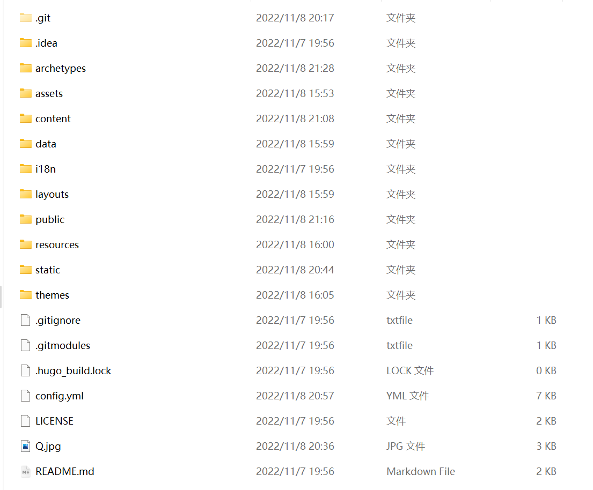

首先安装hugo框架 详见Content Organization - Hugo中文文档 (gohugo.org)
安装好hugo后你可以选择按照hugo的官方文档自己DIY网站的制作也可以再网上寻找别人已经制作好的hugo主题 笔者用的是第二种方法来构建自己的博客 主题链接为：[https://github.com/xyming108/sulv-hugo-papermod](https://github.com/adityatelange/hugo-PaperMod)
1.git clone 拉取代码
① 用git clone的方式拉取代码至桌面，此时会在桌面生成sulv-hugo-papermod目录
② 进入到sulv-hugo-papermod目录，输入git submodule update --init，表示拉取themes/hugo-PaperMod/下的子模块，里面放的是官方主题
2.启动界面
把目录定位到sulv-hugo-papermod下，在终端输入hugo server -D，在浏览器输入：localhost:1313 即可看到现成的博客模板。以此方式来对博客进行调试
3.修改信息
因为是别人的主题 有很多信息需要自己来修改 但原博说的并不是很详细，自己也踩了很多坑，所以着重说说这一部分。

首先说明一下各个文件及文件夹的大概作用。
当你创建一个博客时，实际是通过hugo程序和当前文件夹里的文件共同作用来快速生成各个html文件并将它们链接起来的。
config.yml影响了你整个博客的生成。其中记录了如作者，语言，个人信息等重要参数。着重讲一下其中的baseurl，其表示的是网站的相对路径，影响着你html文件中各种资源（如css，js，jpg）的链接。其值应该设置为你将要将其部署的域名。这也导致了当你并没有把文件上传到服务器上时，你进行hugo生成的public文件夹里的各个页面的载入错误。（所以你只需要保证baseurl正确然后利用hugo server -D来进行调试即可）
themes是你博客采用的子主题
static里存放你的各种字体，视频，图片资源
layouts里是你生成各种页面的框架，即html文件
asset里存放的是css和js文件
其他的作用不大（其实是我还不太懂…）
5.上传到github上
首先要拥有一个自己的GitHub账号
1.创建一个public仓库 名字为 你的用户名.github.io
2.在本地在你的博客工作文件夹中 hugo 生成一个public文件夹，当我们把这个文件夹push到刚刚创建的仓库中就可以看到自己的博客啦
3.安装git并了解一些git指令
一些常用的git指令
首先要登陆你的github账号，可以采用ssh登录，方便快捷 百度
git init #在一个文件夹中初始化git环境
git remote add origin https://……… #远程连接，后面的地址为你的目的仓库
git remote -v #查看该文件夹远程连接状态
git add . #将现路径下的所有文件添加
git commit -m “msg” #提交
git push origin master #上传